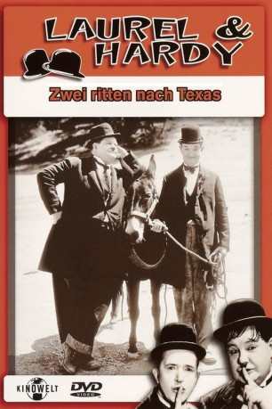
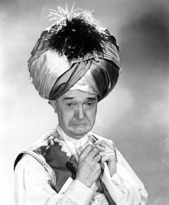
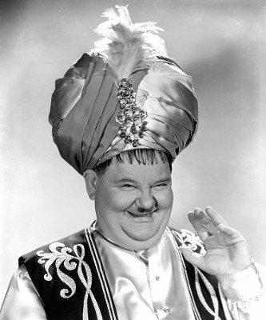
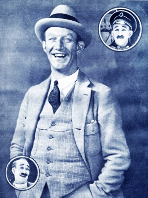
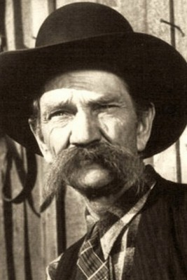
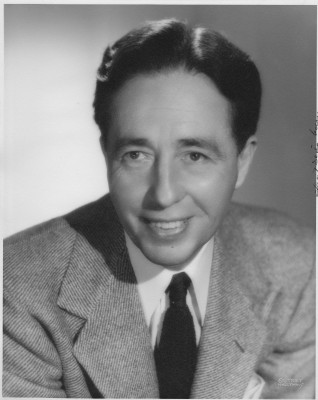
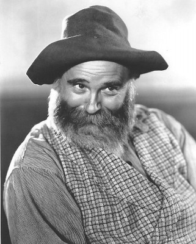
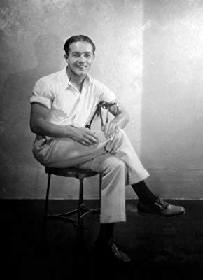
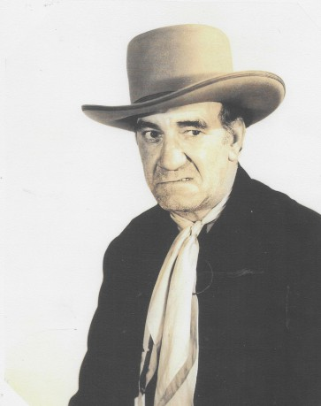

#10396 Dick und Doof - Ritter ohne Furcht und Tadel
Alternativ: Way Out West (Englischer Titel)
Auszeichnungen: für 1 Oscars nominiert
 
 IMDB-Wertung: 7.7 / 10
IMDB-Wertung: 7.7 / 10  Metascore: 0
Metascore: 0 
Mit dem Testament eines verstorbenen Goldminenbesitzers in der Tasche machen sich Stan und Ollie auf in den Wilden Westen, um seine Tochter zu suchen. Der geldgierige Besitzer eines Saloons gibt seine Ehefrau als die Millionenerbin aus. Tatsächlich ist aber das Küchenmädchen die gesuchte, rechtmäßige Erbin. Mit List und Tücke holen sich Stan und Ollie das Testament zurück, um es der Richtigen auszuhändigen.
Jahr: 1937
Dauer: 61 Minuten
FSK: 6
Land: USA Studio: Metro Goldwyn MayerTonspuren:
Untertitel:
Auflösung: 1080p (1920x1080) Größe: 6010 MB
Genre: Komödie, Familie, Western
Regisseur: James W. Horne
Drehbuch: Jack Jevne, Charley Rogers, Charley Rogers, Felix Adler, James Parrott
Soundtrack: Marvin Hatley
Darsteller:
-  Stan Laurel als Stanley
-  Oliver Hardy als Ollie
- Sharon Lynn als Lola Marcel
-  James Finlayson als Mickey Finn
- Rosina Lawrence als Mary Roberts
- Stanley Fields als Sheriff
- Vivien Oakland als Sheriff's Wife
 Victor Adamson als Barfly (uncredited)
Victor Adamson als Barfly (uncredited)-  Hank Bell als Barfly (uncredited)
- Eddie Borden als Barfly (uncredited)
- Don Brookins als Member of The Avalon Boys (uncredited)
- Fritzi Brunette als Saloon Girl (uncredited)
 Ben Corbett als Barfly (uncredited)
Ben Corbett als Barfly (uncredited)- Dudley Dickerson als Janitor (uncredited)
-  Lester Dorr als Cowboy (uncredited)
-  Tex Driscoll als Paw - Bearded Miner at Saloon (uncredited)
- Bobby Dunn als Barfly (uncredited)
- Flora Finch als Maw (uncredited)
- Mary Gordon als Cook (uncredited)
- Carol Holloway als Saloon Girl (uncredited)
- John Ince als Barfly (uncredited)
- Cornelius Keefe als Worker at Mickey Finn's (uncredited)
- Jim Mason als Barfly (uncredited)
 Frank Mills als Bartender (uncredited)
Frank Mills als Bartender (uncredited)- Art Mix als Barfly (uncredited)
- Frank Montgomery als Barfly (uncredited)
- James C. Morton als Bartender (uncredited)
 William H. O'Brien als Saloon Waiter (uncredited)
William H. O'Brien als Saloon Waiter (uncredited)-  Harvey Parry als Waiter (uncredited)
- Fred 'Snowflake' Toones als Janitor (uncredited)
- May Wallace als Cook (uncredited)
-  Blackie Whiteford als Barfly (uncredited)
 Chill Wills als Lead Singer of the Avalon Boys / Stan's Bass Singing (uncredited)
Chill Wills als Lead Singer of the Avalon Boys / Stan's Bass Singing (uncredited)- Jay Wilsey als Barfly (uncredited)
- The Avalon Boys als Singing Quartette
- Dinah als The Mule
- Silver Tip Baker als Townsman (uncredited)
- Harry Bernard als Man Eating at Bar (uncredited)
- Ed Brandenburg als Barfly (uncredited)
- Sammy Brooks als Brushwood Gulch Citizen (uncredited)
- Fred Cady als Barfly (uncredited)
- Art Green als Member of The Avalon Boys (uncredited)
- Jack Hill als Finn's Employee (uncredited)
- Helen Holmes als Matronly Woman (uncredited)
- James Horne Jr. als Young Boy (uncredited)
- Sam Lufkin als Stagecoach Baggage Handler (uncredited)
- George Miller als Waiter (uncredited)
- Dave Pepper als Bartender (uncredited)
- Art Rowlands als Card Player (uncredited)
- Cy Slocum als Barfly (uncredited)
Datei: X:\1900-1949\Dick und Doof - Ritter ohne Furcht und Tadel (1937, FSK6, 1920x1080).mkv seit 04.01.2019
Festplatte: Gemischt-01+Anime
 Es gibt insgesamt 80 Filme in der Gruppe '1900-1949'
Es gibt insgesamt 80 Filme in der Gruppe '1900-1949'